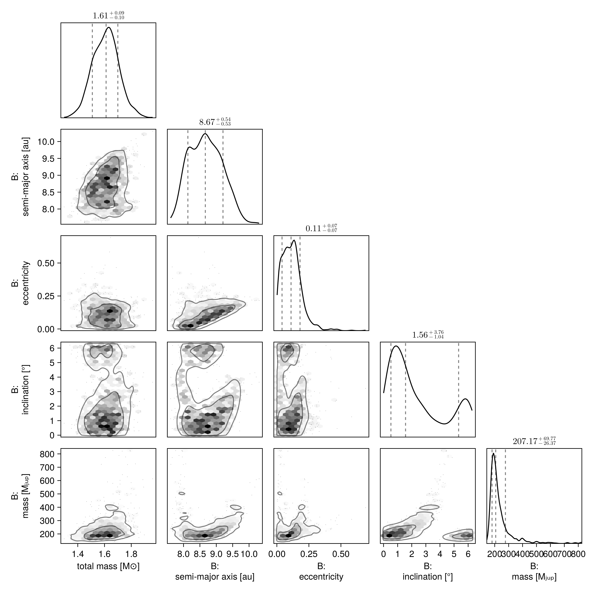
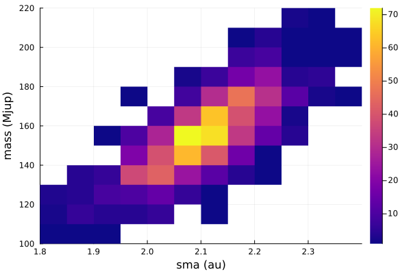

Fit Proper Motion Anomaly
One of the features of Octofitter.jl is support for absolute astrometry aka. proper motion anomaly aka. astrometric acceleration. These data points are typically calculated by finding the difference between a long term proper motion of a star between the Hipparcos and GAIA catalogs, and their proper motion calculated within the windows of each catalog.
For Hipparcos/GAIA this gives four data points that can constrain the dynamical mass & orbits of planetary companions (assuming we subtract out the net trend).
You can specify these quantities manually, but the easiest way is to use the Hipparcos-GAIA Catalog of Accelerations (HGCA, https://arxiv.org/abs/2105.11662). Support for loading this catalog is built into Octofitter.jl.
Let's look at the star and companion HD 91312 A & B, discovered by SCExAO. We will use their published astrometry and proper motion anomaly extracted from the HGCA.
The first step is to find the GAIA source ID for your object. For HD 91312, SIMBAD tells us the GAIA DR2 ID is 756291174721509376 (which we will assume is the same in eDR3).
Planet Model
For this model, we will have to add the variable mass as a prior. The units used on this variable are Jupiter masses, in contrast to M, the primary's mass, in solar masses. A reasonable uninformative prior for mass is Uniform(0,1000) or LogUniform(1,1000) depending on the situation.
Initial setup:
using Octofitter, Distributions, Plots┌ Warning: Module Octofitter with build ID ffffffff-ffff-ffff-0000-0088b78c847a is missing from the cache.
│ This may mean Octofitter [daf3887e-d01a-44a1-9d7e-98f15c5d69c9] does not support precompilation but is imported by a module that does.
└ @ Base loading.jl:1942astrom = PlanetRelAstromLikelihood(
(epoch=mjd("2016-12-15"), ra=133., dec=-174., σ_ra=07.0, σ_dec=07., cor=0.2),
(epoch=mjd("2017-03-12"), ra=126., dec=-176., σ_ra=04.0, σ_dec=04., cor=0.3),
(epoch=mjd("2017-03-13"), ra=127., dec=-172., σ_ra=04.0, σ_dec=04., cor=0.1),
(epoch=mjd("2018-02-08"), ra=083., dec=-133., σ_ra=10.0, σ_dec=10., cor=0.4),
(epoch=mjd("2018-11-28"), ra=058., dec=-122., σ_ra=10.0, σ_dec=20., cor=0.3),
(epoch=mjd("2018-12-15"), ra=056., dec=-104., σ_ra=08.0, σ_dec=08., cor=0.2),
)
@planet B Visual{KepOrbit} begin
a ~ truncated(LogNormal(9,3),lower=0)
e ~ truncated(Normal(0, 0.5), lower=0, upper=1) #Uniform(0,0.9999)
ω ~ UniformCircular()
i ~ Sine() # The Sine() distribution is defined by Octofitter
Ω ~ UniformCircular()
# mass ~ LogNormal(300, 18)
# Anoter option would be:
mass ~ Uniform(0.5, 1000)
τ ~ UniformCircular(1.0)
P = √(B.a^3/system.M)
tp = B.τ*B.P*365.25 + 57737 # reference epoch for τ. Choose an MJD date near your data.
end astromPlanet B
Derived:
ω, Ω, τ, P, tp,
Priors:
a Truncated(Distributions.LogNormal{Float64}(μ=9.0, σ=3.0); lower=0.0)
e Truncated(Distributions.Normal{Float64}(μ=0.0, σ=0.5); lower=0.0, upper=1.0)
ωy Distributions.Normal{Float64}(μ=0.0, σ=1.0)
ωx Distributions.Normal{Float64}(μ=0.0, σ=1.0)
i Sine()
Ωy Distributions.Normal{Float64}(μ=0.0, σ=1.0)
Ωx Distributions.Normal{Float64}(μ=0.0, σ=1.0)
mass Distributions.Uniform{Float64}(a=0.5, b=1000.0)
τy Distributions.Normal{Float64}(μ=0.0, σ=1.0)
τx Distributions.Normal{Float64}(μ=0.0, σ=1.0)
Octofitter.UnitLengthPrior{:ωy, :ωx}: √(ωy^2+ωx^2) ~ LogNormal(log(1), 0.02)
Octofitter.UnitLengthPrior{:Ωy, :Ωx}: √(Ωy^2+Ωx^2) ~ LogNormal(log(1), 0.02)
Octofitter.UnitLengthPrior{:τy, :τx}: √(τy^2+τx^2) ~ LogNormal(log(1), 0.02)
PlanetRelAstromLikelihood Table with 6 columns and 6 rows:
epoch ra dec σ_ra σ_dec cor
┌─────────────────────────────────────────
1 │ 57737.0 133.0 -174.0 7.0 7.0 0.2
2 │ 57824.0 126.0 -176.0 4.0 4.0 0.3
3 │ 57825.0 127.0 -172.0 4.0 4.0 0.1
4 │ 58157.0 83.0 -133.0 10.0 10.0 0.4
5 │ 58450.0 58.0 -122.0 10.0 20.0 0.3
6 │ 58467.0 56.0 -104.0 8.0 8.0 0.2
System Model & Specifying Proper Motion Anomaly
Now that we have our planet model, we create a system model to contain it.
@system HD91312 begin
M ~ truncated(Normal(1.61, 0.1), lower=0)
plx ~ gaia_plx(gaia_id=756291174721509376)
# Priors on the centre of mass proper motion
pmra ~ Normal(-137, 10)
pmdec ~ Normal(2, 10)
end HGCALikelihood(gaia_id=756291174721509376) BSystem model HD91312
Derived:
Priors:
M Truncated(Distributions.Normal{Float64}(μ=1.61, σ=0.1); lower=0.0)
plx Truncated(Distributions.Normal{Float64}(μ=29.14532470703125, σ=0.1407301127910614); lower=0.0)
pmra Distributions.Normal{Float64}(μ=-137.0, σ=10.0)
pmdec Distributions.Normal{Float64}(μ=2.0, σ=10.0)
Planet B
Derived:
ω, Ω, τ, P, tp,
Priors:
a Truncated(Distributions.LogNormal{Float64}(μ=9.0, σ=3.0); lower=0.0)
e Truncated(Distributions.Normal{Float64}(μ=0.0, σ=0.5); lower=0.0, upper=1.0)
ωy Distributions.Normal{Float64}(μ=0.0, σ=1.0)
ωx Distributions.Normal{Float64}(μ=0.0, σ=1.0)
i Sine()
Ωy Distributions.Normal{Float64}(μ=0.0, σ=1.0)
Ωx Distributions.Normal{Float64}(μ=0.0, σ=1.0)
mass Distributions.Uniform{Float64}(a=0.5, b=1000.0)
τy Distributions.Normal{Float64}(μ=0.0, σ=1.0)
τx Distributions.Normal{Float64}(μ=0.0, σ=1.0)
Octofitter.UnitLengthPrior{:ωy, :ωx}: √(ωy^2+ωx^2) ~ LogNormal(log(1), 0.02)
Octofitter.UnitLengthPrior{:Ωy, :Ωx}: √(Ωy^2+Ωx^2) ~ LogNormal(log(1), 0.02)
Octofitter.UnitLengthPrior{:τy, :τx}: √(τy^2+τx^2) ~ LogNormal(log(1), 0.02)
PlanetRelAstromLikelihood Table with 6 columns and 6 rows:
epoch ra dec σ_ra σ_dec cor
┌─────────────────────────────────────────
1 │ 57737.0 133.0 -174.0 7.0 7.0 0.2
2 │ 57824.0 126.0 -176.0 4.0 4.0 0.3
3 │ 57825.0 127.0 -172.0 4.0 4.0 0.1
4 │ 58157.0 83.0 -133.0 10.0 10.0 0.4
5 │ 58450.0 58.0 -122.0 10.0 20.0 0.3
6 │ 58467.0 56.0 -104.0 8.0 8.0 0.2
HGCALikelihood Table with 35 columns and 1 row:
hip_id gaia_source_id gaia_ra gaia_dec radial_velocity ⋯
┌──────────────────────────────────────────────────────────────────
1 │ 51658 756291174721509376 158.307 40.4256 9.0 ⋯
We specify priors on M and plx as usual, but here we use the gaia_plx helper function to read the parallax and uncertainty directly from the HGCA using its source ID.
We also add parameters for the long term system's proper motion. This is usually close to the long term trend between the Hipparcos and GAIA measurements.
After the priors, we add the proper motion anomaly measurements from the HGCA. If this is your first time running this code, you will be prompted to automatically download and cache the catalog which may take around 30 seconds.
Sampling from the posterior
Sample from our model as usual:
model = Octofitter.LogDensityModel(HD91312)
chain = octofit(model)Chains MCMC chain (1000×32×1 Array{Float64, 3}):
Iterations = 1:1:1000
Number of chains = 1
Samples per chain = 1000
Wall duration = 44.91 seconds
Compute duration = 44.91 seconds
parameters = M, plx, pmra, pmdec, B_a, B_e, B_ωy, B_ωx, B_i, B_Ωy, B_Ωx, B_mass, B_τy, B_τx, B_ω, B_Ω, B_τ, B_P, B_tp
internals = n_steps, is_accept, acceptance_rate, hamiltonian_energy, hamiltonian_energy_error, max_hamiltonian_energy_error, tree_depth, numerical_error, step_size, nom_step_size, is_adapt, loglike, logpost, tree_depth, numerical_error
Summary Statistics
parameters mean std mcse ess_bulk ess_tail rha ⋯
Symbol Float64 Float64 Float64 Float64 Float64 Float6 ⋯
M 1.6088 0.0970 0.0045 460.9304 574.9350 0.999 ⋯
plx 29.1424 0.1453 0.0045 1046.4247 640.0229 0.999 ⋯
pmra -137.6511 0.0198 0.0006 1023.1803 731.1019 1.001 ⋯
pmdec 1.8874 0.0127 0.0004 954.9417 635.4416 1.003 ⋯
B_a 8.6798 0.4981 0.0534 83.9293 131.9970 1.020 ⋯
B_e 0.1168 0.0787 0.0063 152.5549 238.3914 1.000 ⋯
B_ωy -0.5649 0.4250 0.0459 97.6220 155.8247 1.028 ⋯
B_ωx -0.4398 0.5557 0.0408 165.9449 209.1463 1.006 ⋯
B_i 1.4436 0.0223 0.0018 176.4760 170.9876 1.008 ⋯
B_Ωy 0.7779 0.0208 0.0012 310.4250 404.1388 1.004 ⋯
B_Ωx -0.6290 0.0224 0.0012 361.1046 391.3336 1.003 ⋯
B_mass 236.3563 91.8192 8.9659 186.6850 126.9693 1.004 ⋯
B_τy 0.7218 0.3314 0.0375 123.1028 117.9802 1.030 ⋯
B_τx 0.2084 0.5727 0.0476 126.7688 177.4436 1.023 ⋯
B_ω -1.1222 2.0682 0.1049 553.8505 757.6287 1.000 ⋯
B_Ω -0.6800 0.0238 0.0015 268.9211 322.4638 1.006 ⋯
B_τ 0.0386 0.1230 0.0104 123.0878 139.6084 1.024 ⋯
⋮ ⋮ ⋮ ⋮ ⋮ ⋮ ⋮ ⋱
2 columns and 2 rows omitted
Quantiles
parameters 2.5% 25.0% 50.0% 75.0% 97.5%
Symbol Float64 Float64 Float64 Float64 Float64
M 1.4234 1.5404 1.6118 1.6739 1.8132
plx 28.8551 29.0472 29.1378 29.2403 29.4247
pmra -137.6875 -137.6652 -137.6513 -137.6379 -137.6119
pmdec 1.8634 1.8789 1.8871 1.8954 1.9121
B_a 7.8550 8.2714 8.6653 9.0433 9.6315
B_e 0.0091 0.0603 0.1107 0.1559 0.3035
B_ωy -1.0132 -0.9370 -0.6891 -0.2887 0.4201
B_ωx -1.0122 -0.9221 -0.6449 -0.0823 0.8840
B_i 1.4047 1.4287 1.4414 1.4562 1.4936
B_Ωy 0.7375 0.7637 0.7772 0.7907 0.8250
B_Ωx -0.6706 -0.6442 -0.6295 -0.6152 -0.5845
B_mass 163.8768 186.8579 207.1712 245.6232 509.4174
B_τy -0.2860 0.5894 0.8386 0.9586 1.0170
B_τx -0.9494 -0.2215 0.3238 0.6999 0.9789
B_ω -3.0604 -2.4997 -1.9817 -1.2270 3.0491
B_Ω -0.7227 -0.6957 -0.6817 -0.6648 -0.6301
B_τ -0.2292 -0.0366 0.0531 0.1237 0.2501
B_P 17.0685 19.0279 20.2397 21.3803 23.0961
B_tp 56194.0567 57462.0654 58145.1731 58640.8328 59336.4874
This takes about a minute on the first run due to JIT startup latency; subsequent runs are very quick even on e.g. an older laptop.
Analysis
The first step is to look at the table output above generated by MCMCChains.jl. The rhat column gives a convergence measure. Each parameter should have an rhat very close to 1.000. If not, you may need to run the model for more iterations or tweak the parameterization of the model to improve sampling. The ess column gives an estimate of the effective sample size. The mean and std columns give the mean and standard deviation of each parameter.
The second table summarizes the 2.5, 25, 50, 75, and 97.5 percentiles of each parameter in the model.
Another useful plotting function is octoplot which takes similar arguments and produces a 9 panel plot:
octoplot(model, chain)
Pair Plot
If we wish to examine the covariance between parameters in more detail, we can construct a pair-plot (aka. corner plot).
For a quick look, you can just run octocorner(model, chain), but for more control output you may wish to customize the labels, units, unit labels, etc. See the documentation of PairPlots.jl for more details.
##Create a corner plot / pair plot.
# We can access any property from the chain specified in Variables
using CairoMakie: Makie
using PairPlots
octocorner(model, chain, small=true)
Fitting Astrometric Acceleration Only
If you wish to look at the possible locations/masses of a planet around a star using onnly GAIA/HIPPARCOS, you can follow a simplified approach.
As a start, you can restrict the orbital parameters to just semi-major axis, epoch of periastron passage, and mass.
@planet B Visual{KepOrbit} begin
a ~ LogUniform(0.1, 100)
mass ~ LogUniform(1, 2000)
i = 0
e = 0
Ω = 0
ω = 0
τ ~ UniformCircular(1.0)
P = √(B.a^3/system.M)
tp = B.τ*B.P*365.25 + 57737 # reference epoch for τ. Choose an MJD date near your data.
end
@system HD91312 begin
M ~ truncated(Normal(1.61, 0.2), lower=0)
plx ~ gaia_plx(gaia_id=756291174721509376)
# Priors on the centre of mass proper motion
pmra ~ Normal(0, 500)
pmdec ~ Normal(0, 500)
end HGCALikelihood(gaia_id=756291174721509376) BSystem model HD91312
Derived:
Priors:
M Truncated(Distributions.Normal{Float64}(μ=1.61, σ=0.2); lower=0.0)
plx Truncated(Distributions.Normal{Float64}(μ=29.14532470703125, σ=0.1407301127910614); lower=0.0)
pmra Distributions.Normal{Float64}(μ=0.0, σ=500.0)
pmdec Distributions.Normal{Float64}(μ=0.0, σ=500.0)
Planet B
Derived:
i, e, Ω, ω, τ, P, tp,
Priors:
a Distributions.LogUniform{Float64}(a=0.1, b=100.0)
mass Distributions.LogUniform{Int64}(a=1, b=2000)
τy Distributions.Normal{Float64}(μ=0.0, σ=1.0)
τx Distributions.Normal{Float64}(μ=0.0, σ=1.0)
Octofitter.UnitLengthPrior{:τy, :τx}: √(τy^2+τx^2) ~ LogNormal(log(1), 0.02)
HGCALikelihood Table with 35 columns and 1 row:
hip_id gaia_source_id gaia_ra gaia_dec radial_velocity ⋯
┌──────────────────────────────────────────────────────────────────
1 │ 51658 756291174721509376 158.307 40.4256 9.0 ⋯
This models assumes a circular, face-on orbit.
model = Octofitter.LogDensityModel(HD91312; autodiff=:ForwardDiff, verbosity=4) # defaults are ForwardDiff, and verbosity=0
chain = octofit(model)Chains MCMC chain (1000×28×1 Array{Float64, 3}):
Iterations = 1:1:1000
Number of chains = 1
Samples per chain = 1000
Wall duration = 26.98 seconds
Compute duration = 26.98 seconds
parameters = M, plx, pmra, pmdec, B_a, B_mass, B_τy, B_τx, B_i, B_e, B_Ω, B_ω, B_τ, B_P, B_tp
internals = n_steps, is_accept, acceptance_rate, hamiltonian_energy, hamiltonian_energy_error, max_hamiltonian_energy_error, tree_depth, numerical_error, step_size, nom_step_size, is_adapt, loglike, logpost, tree_depth, numerical_error
Summary Statistics
parameters mean std mcse ess_bulk ess_tail rhat ⋯
Symbol Float64 Float64 Float64 Float64 Float64 Float64 ⋯
M 1.6043 0.2014 0.0056 1270.0623 724.6634 1.0038 ⋯
plx 29.1477 0.1345 0.0032 1748.1071 684.0823 0.9999 ⋯
pmra -137.6662 0.0198 0.0006 1203.6779 702.6672 1.0039 ⋯
pmdec 1.8925 0.0135 0.0003 1558.7294 499.5013 0.9998 ⋯
B_a 2.1033 0.0891 0.0025 1280.2016 720.3335 1.0033 ⋯
B_mass 155.4781 18.2097 0.5556 1072.2546 785.1866 0.9996 ⋯
B_τy 0.0831 0.0899 0.0029 1000.7217 717.9751 1.0057 ⋯
B_τx -0.9929 0.0229 0.0006 1306.2813 773.6326 1.0031 ⋯
B_i 0.0000 0.0000 NaN NaN NaN NaN ⋯
B_e 0.0000 0.0000 NaN NaN NaN NaN ⋯
B_Ω 0.0000 0.0000 NaN NaN NaN NaN ⋯
B_ω 0.0000 0.0000 NaN NaN NaN NaN ⋯
B_τ -0.2367 0.0144 0.0005 981.3155 717.9751 1.0050 ⋯
B_P 2.4147 0.0058 0.0002 971.9036 756.2644 0.9990 ⋯
B_tp 57528.2619 12.3699 0.3923 987.8201 716.3243 1.0041 ⋯
1 column omitted
Quantiles
parameters 2.5% 25.0% 50.0% 75.0% 97.5%
Symbol Float64 Float64 Float64 Float64 Float64
M 1.2101 1.4687 1.6042 1.7389 1.9820
plx 28.8858 29.0600 29.1454 29.2415 29.4258
pmra -137.7064 -137.6797 -137.6663 -137.6525 -137.6281
pmdec 1.8652 1.8831 1.8936 1.9014 1.9189
B_a 1.9167 2.0458 2.1077 2.1642 2.2611
B_mass 119.9607 142.4889 154.9701 167.8055 191.8380
B_τy -0.1005 0.0292 0.0848 0.1427 0.2482
B_τx -1.0382 -1.0077 -0.9927 -0.9782 -0.9499
B_i 0.0000 0.0000 0.0000 0.0000 0.0000
B_e 0.0000 0.0000 0.0000 0.0000 0.0000
B_Ω 0.0000 0.0000 0.0000 0.0000 0.0000
B_ω 0.0000 0.0000 0.0000 0.0000 0.0000
B_τ -0.2658 -0.2454 -0.2364 -0.2274 -0.2102
B_P 2.4032 2.4110 2.4153 2.4186 2.4254
B_tp 57503.4361 57520.7846 57528.4647 57536.4071 57551.0359
With such simple models, the mean tree depth is often very low and sampling proceeds very quickly.
A good place to start is a histogram of planet mass vs. semi-major axis:
Plots.histogram2d(chain["B_a"], chain["B_mass"], color=:plasma, xguide="sma (au)", yguide="mass (Mjup)")
You can also visualize the orbits and proper motion:
octoplot(model, chain)